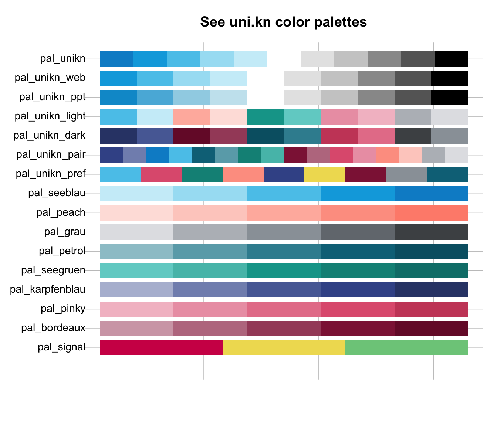
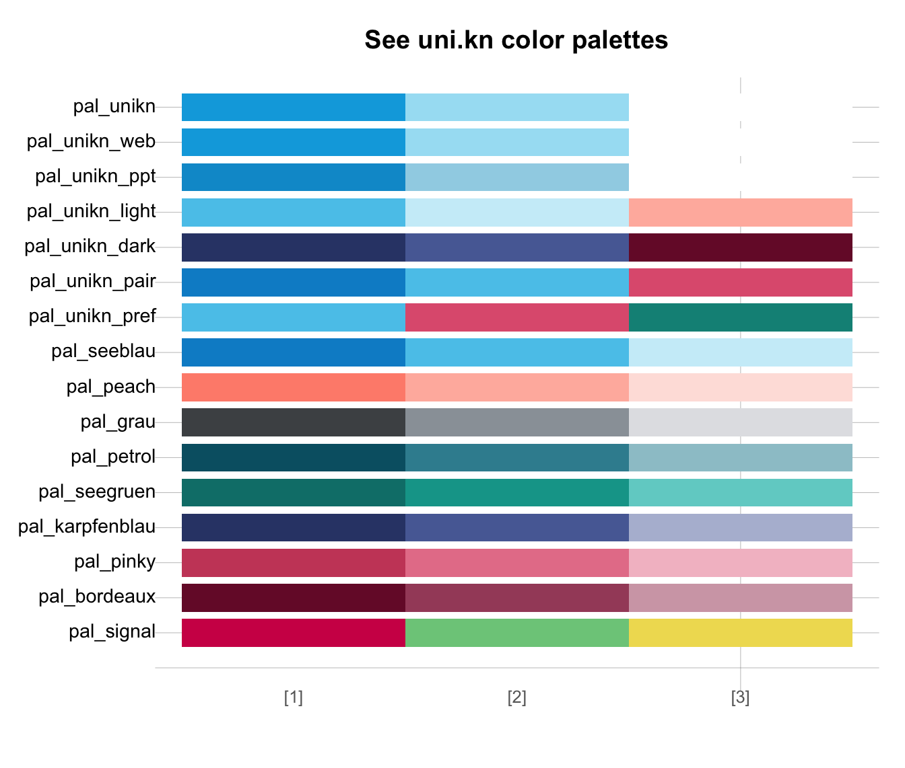
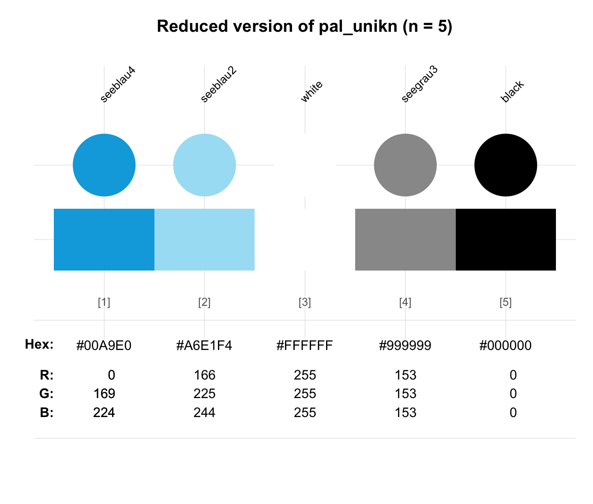
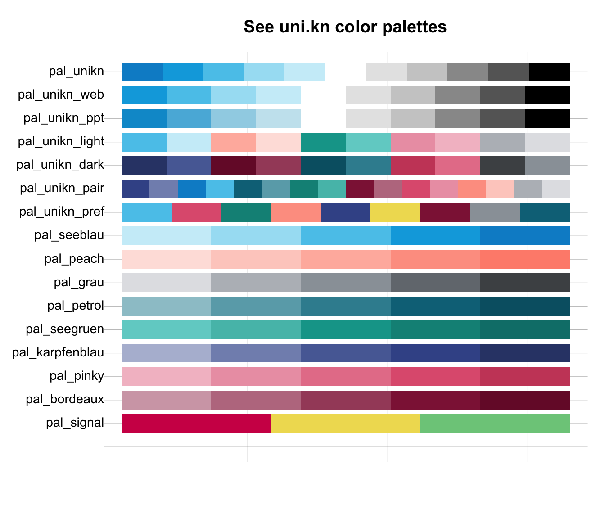
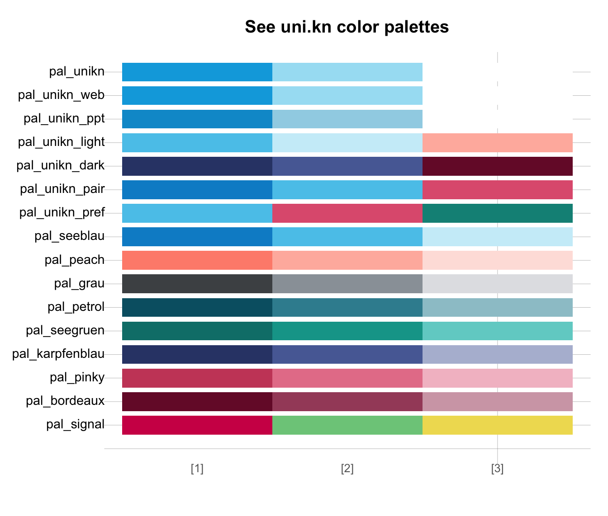
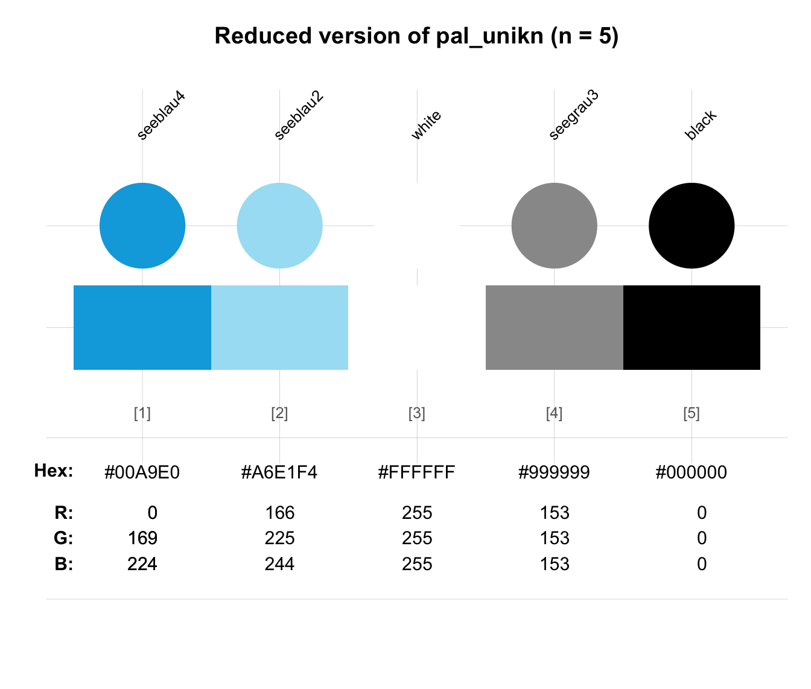

seecol provides an interface to plotting (or "seeing")
the colors of a palette or comparing multiple color palettes.
Usage
seecol(
pal = "unikn_all",
n = "all",
alpha = NA,
hex = NULL,
rgb = NULL,
col_bg = NULL,
col_brd = NULL,
lwd_brd = NULL,
grid = TRUE,
scale_x = FALSE,
main = NA,
sub = NULL,
title = NULL,
mar_note = NA,
pal_names = NA,
...
)Arguments
- pal
A single color palette (as a vector of colors), multiple color palettes (as a list), or a recognized keyword (as a character string). Default:
pal = "unikn_all"(i.e., plot all color palettes provided by the unikn package).Recognized keywords are:
"all": All color palettes of the unikn package."all_unikn"or"unikn_all": All uni.kn color palettes (of the University of Konstanz)."unikn_basic": All basic uni.kn palettes."grad_all": All uni.kn palettes with color gradients."pair_all": All uni.kn palettes with pairwise colors."pref_all": All preferred uni.kn colors and their gradients."add": Additional/contributed color palettes (deprecated, as additional color palettes were migrated to the unicol R package).
seecoldoes also recognize keywords (e.g.,"all_unikn") or keywords without"unikn"(e.g.,"basic").- n
Number of colors to show or use. If
nis lower or higher than the length of the current color palettepal, the color palette is reduced or extrapolated (usinggrDevices::colorRampPalette). Default:n = "all"(i.e., show all colors in palette).- alpha
A factor modifying the opacity alpha (as
alpha.finadjustcolor) to a value in[0, 1]. Default:alpha = NA(i.e., no modification of opacity).- hex
Should HEX color values be shown? Default:
hex = NULL(i.e., show HEX color values when there is sufficient space to print them).- rgb
Should RGB color values be shown? Default:
rgb = NULL(i.e., show RGB color values when there is sufficient space to print them).- col_bg
Color of plot background. Default:
col_bg = NULL.- col_brd
Color of shape borders (if shown). Default:
col_brd = NULL.- lwd_brd
Line width of shape borders (if shown). Default:
lwd_brd = NULL.- grid
Show grid in the color plot? Default:
grid = TRUE.- scale_x
Scale color shapes (when comparing multiple palettes) to a fixed total width? Default:
scale_x = FALSE.- main
Main plot title (as a character string). Default:
main = NAcreates a default title.- sub
Optional subtitle (as a character string). Default:
sub = NULL(i.e., no subtitle).- title
Deprecated plot title. Use
maininstead.- mar_note
Optional margin note (on bottom right). Default:
mar_note = NA(i.e., no margin note).- pal_names
Names of color palettes or colors (as a character vector). Default:
pal_names = NA(for default names).- ...
Other graphical parameters (passed to
plot).
Details
seecol has two main modes, based on the contents of its pal argument:
if
palis set to a specific color palette (or a vector of multiple colors or color palettes):Plot the current color palette and optional details on its colors.
if
pal = "unikn_all"or a list of multiple color palettes:Plot visual vectors of all current color palettes for comparing them.
Specifying distinct = TRUE removes visual duplicate colors (based on HEX values,
ignoring transparency), but only when showing an individual color palette pal.
Various title options (i.e., main, sub, and mar_note) and
a pal_names argument add control over plotted text labels.
However, the length of a character vector provided to pal_names must correspond
to the number of (custom) color palettes or colors.
See also
usecol for using color palettes;
simcol for finding similar colors;
newpal for defining new color palettes;
grepal for finding named colors;
shades_of to defining shades of a given color;
ac for adjusting color transparency;
pal_unikn for the default uni.kn color palette.
Other color functions:
ac(),
demopal(),
grepal(),
newpal(),
shades_of(),
simcol(),
usecol()
Examples
# See multiple color palettes:
seecol() # default: seecol(pal = "all")
 # See details of one color palette:
seecol(pal_unikn) # see a specific color palette
# See details of one color palette:
seecol(pal_unikn) # see a specific color palette
 # Combining colors or color palettes:
seecol(c(rev(pal_seeblau), pal_seegruen)) # combine color palettes
# Combining colors or color palettes:
seecol(c(rev(pal_seeblau), pal_seegruen)) # combine color palettes
 seecol(c(rev(pal_seeblau), "white", pal_pinky)) # combine color palettes and color names
seecol(c(rev(pal_seeblau), "white", pal_pinky)) # combine color palettes and color names
 seecol(c("black", "firebrick", "gold")) # combine color names
seecol(c("black", "firebrick", "gold")) # combine color names
 # Scale a set of color palettes to a fixed width:
seecol(scale_x = TRUE)

# Using n to reduce or extend color palettes:
seecol(n = 3) # viewing reduced ranges of all palettes

seecol(n = 12) # viewing extended ranges of all palettes
seecol(pal_unikn, n = 5,
main = "Reduced version of pal_unikn (n = 5)") # reducing pal_unikn

seecol(pal_seeblau, n = 8,
main = "Extended version of pal_seeblau (n = 8)") # extending pal_seeblau
# Scale a set of color palettes to a fixed width:
seecol(scale_x = TRUE)

# Using n to reduce or extend color palettes:
seecol(n = 3) # viewing reduced ranges of all palettes

seecol(n = 12) # viewing extended ranges of all palettes
seecol(pal_unikn, n = 5,
main = "Reduced version of pal_unikn (n = 5)") # reducing pal_unikn

seecol(pal_seeblau, n = 8,
main = "Extended version of pal_seeblau (n = 8)") # extending pal_seeblau
 # Combining and extending color palettes:
seecol(c(rev(pal_seeblau), "white", pal_bordeaux), n = 17,
main = "Diverging custom color palette (with 17 colors)")
# Combining and extending color palettes:
seecol(c(rev(pal_seeblau), "white", pal_bordeaux), n = 17,
main = "Diverging custom color palette (with 17 colors)")
 # Defining custom color palettes:
pal_mpg <- c("#007367", "white", "#D0D3D4") # mixing hex values and color names
names(pal_mpg) <- c("mpg green", "mpg white", "mpg grey") # color names
pal_bdg <- usecol(c(Bordeaux, "gold"), n = 5) # using usecol
# Viewing extended color palette:
seecol(pal_mpg, n = 9, main = "Custom color palette of the Max Planck Society")
# Defining custom color palettes:
pal_mpg <- c("#007367", "white", "#D0D3D4") # mixing hex values and color names
names(pal_mpg) <- c("mpg green", "mpg white", "mpg grey") # color names
pal_bdg <- usecol(c(Bordeaux, "gold"), n = 5) # using usecol
# Viewing extended color palette:
seecol(pal_mpg, n = 9, main = "Custom color palette of the Max Planck Society")
 # Comparing (and labeling) custom color palettes:
seecol(list(pal_mpg, pal_bdg, pal_unikn), scale_x = TRUE,
pal_names = c("Max Planck", "Bordeaux-Gold", "Uni Konstanz"),
main = "Comparing and labeling custom color palettes")
## Viewing color palettes from other packages:
# library(RColorBrewer)
# seecol(brewer.pal(name = "RdBu", n = 11)) # viewing "RdBu" palette from RColorBrewer
## Extending color palettes:
# seecol(brewer.pal(name = "RdBu", n = 11), n = 15) # extending palette to 15 colors
# Comparing (and labeling) custom color palettes:
seecol(list(pal_mpg, pal_bdg, pal_unikn), scale_x = TRUE,
pal_names = c("Max Planck", "Bordeaux-Gold", "Uni Konstanz"),
main = "Comparing and labeling custom color palettes")
## Viewing color palettes from other packages:
# library(RColorBrewer)
# seecol(brewer.pal(name = "RdBu", n = 11)) # viewing "RdBu" palette from RColorBrewer
## Extending color palettes:
# seecol(brewer.pal(name = "RdBu", n = 11), n = 15) # extending palette to 15 colors